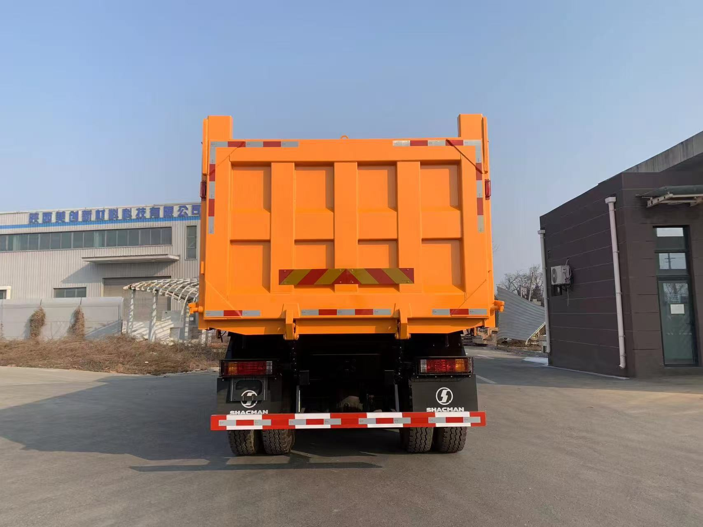
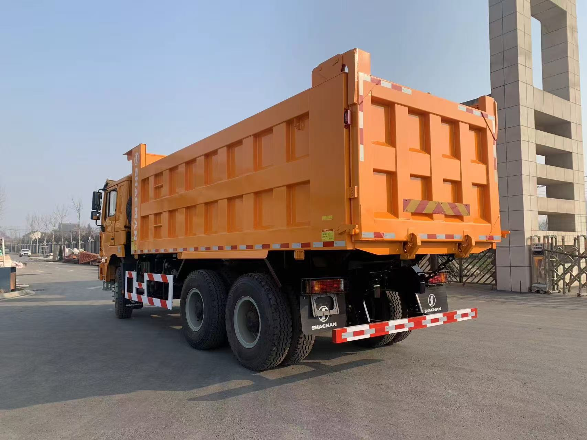

Direct answer: A Nigerian fleet buyer should treat F3000 as a configurable platform, not one fixed truck. The final choice depends on cargo, road mix, axle-load compliance, fuel quality, ambient heat, tyre support, workshop skills and the number of vehicles required.
Build a fleet requirement sheet
List routes, material, target legal payload, kilometres per day, shifts, gradients, average speed and expected idling. For mixed operations, separate road-haul needs from off-road jobsite needs.
Confirm the complete drivetrain
Do not accept a quotation that says only F3000. Request engine and emission standard, transmission code, axle model and ratio, tyre size and pattern, frame, suspension, fuel tank and body specification.
Heat, fuel and uptime
High ambient temperatures and long daily operation make cooling condition, filtration and preventive maintenance important. Confirm fuel requirements and prepare filters, belts, brake items and common service parts for the exact configuration.
Commercial and inspection controls
The offer should state Incoterm, destination port, production scope, delivery estimate, warranty terms and documents. A pre-shipment inspection should compare the completed trucks with the signed specification.
- destination country, port and quantity;
- cargo, density and target legal payload;
- road surface, daily distance and maximum grade;
- steering, emissions, registration and other local requirements;
- required delivery term and optional equipment.
F3000 6x4 real vehicle photos
Supplier-provided photographs of an orange F3000 6x4 dump truck. The pictured vehicle is a model reference; the configuration for your destination is confirmed separately.




Frequently asked questions
Is F3000 one fixed configuration?
No. Engine, transmission, axles, body and options vary.
What should be checked for Nigeria?
Local compliance, route, heat, fuel, tyre support, maintenance and legal weights.
Can payload be promised from body volume?
No. Legal payload depends on vehicle weights, material density and regulations.
What details produce a useful quote?
Quantity, port, application, route, cargo, payload target and required specification.
Continue your research with the related model or buyer resource, review more truck buying guides, or send the project details below. Related model or buyer resource · More guides.
Compare SHACMAN dump trucks for sale, 6x4 and 8x4 options and send your route and material requirements for a configuration-based quotation.
Request a destination-specific truck proposal
We will confirm the applicable configuration, commercial terms and shipment plan for your project.